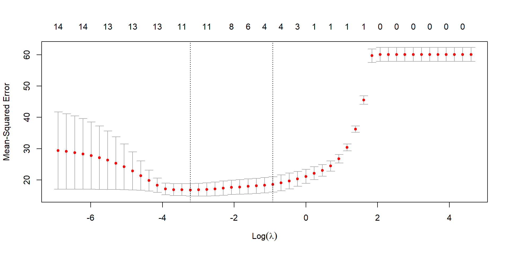

In Machine Learning we study and build models that learn predictive relationships from data by minimizing error and validating performance on new data.
Machine Learning
In Machine Learning we study and build models that learn predictive relationships from data by minimizing error and validating performance on new data.
Important Concepts:
Building models
Predictive relationships from data
Minimize error
Validating performance on new data
These ideas come directly from statistics, especially non-parametric methods, and become powerful at large scale.
In some settings, models are used not to predict a target, but to discover hidden structure in the data itself.
Linear Regression: A Starting Point
We observe data \(\{(x_i,y_i):i\leq N\}\).
Our goal is to predict \(y\) from \(x\) using these data.
What is a Model?
A model is a function that maps inputs to predictions. For simple regression, the model is: \[\hat{y}=f(x)=\beta_0+\beta_1x,\] where \(\beta_0, \beta_1\) are parameters to be estimated from data.
Our goal is to find the values of \(\beta_0, \beta_1\) that make the model’s predictions as accurate as possible.
Error, Loss, and Learning
For each observation \((x_i, y_i)\), the model predicts \[
\hat y_i = f(x_i).
\] The residual is \[
e_i = y_i - \hat y_i.
\]
Residuals measure error point by point. To evaluate the model as a whole, we aggregate them using a loss function.
In linear regression, we commonly use the mean squared error: \[
\text{Loss}(\beta_0,\beta_1)
= \frac{1}{N}\sum_{i=1}^N (y_i - \hat y_i)^2.
\]
Learning means choosing the parameters that minimize this loss.
Goal: Create a model that generalizes well to new, unseen data.
Our dataset has 40 points
We randomly select 30 points to train the model
The remaining 10 points are used to test the model
We will plot the training and test errors versus polynomial degree
Training error decreases monotonically as degree increases
Test error decreases initially, then increases as the model overfits
The U-shaped test error curve illustrates the bias–variance tradeoff
Polynomial Regression: Train/Test
The Fitted Models Are Random
The fitted models depend on which observations are randomly selected for training. Below we compare two polynomial models fitted on different random training sets, illustrating model variance.
Fitted models are random because the training data is random. So we do not judge a model by a single fit.
Instead, we:
fit the same model on several different training samples
evaluate each fit on data it has not seen
For each model choice (e.g. polynomial degree), we record the prediction error on the test data.
We select the model with the lowest average test error.
This is the core idea of K-fold cross-validation, a standard tool in ML
Overfitting
How do we detect overfitting?
In polynomial regression we actually see it. In more complex models with thousands of parameters we cannot visualize it
The most common method is to compare the error between the train and test sets
Solutions to Overfitting: When we detect overfitting there are several methods
Adjust Model Complexity:
Use simpler architecture, like reducing the polynomial degree in our examples
Regularization: Restrict the values of the model adding a penalty
Ridge (Tichonov) Regularization
Lasso Regularization
Add More Data
Regularization in Polynomial Regression
Setup: Data points \(\{(x_i,y_i):i\leq N\}\) with polynomial model \(p(x)=a_0+a_1x+\cdots+a_dx^d\)
Standard Loss (Mean Squared Error):\[\text{Loss}=\frac{1}{N}\sum_{i=1}^N(p(x_i)-y_i)^2\]
Problem: When degree \(d\) is too large, the model fits noise instead of the underlying trend (overfitting)
Solution - Ridge Regularization (Tikhonov):
Penalize large coefficients by adding a penalty term: \[\text{Loss}_{\text{Ridge}}=\frac{1}{N}\sum_{i=1}^N(p(x_i)-y_i)^2+\lambda\sum_{i=1}^d a_i^2\]
Solution - Lasso Regularization:
Use absolute values for the penalty (encourages sparse solutions): \[\text{Loss}_{\text{Lasso}}=\frac{1}{N}\sum_{i=1}^N(p(x_i)-y_i)^2+\lambda\sum_{i=1}^d |a_i|\]
\(\lambda > 0\) controls the regularization strength (larger \(\lambda\) = more penalty)
Both methods shrink coefficients toward zero, preventing overfitting
Fix Overfitting: Ridge Regularization
Ridge (Tikhonov) Regularization penalizes large coefficients of the polynomial with the loss function: \[\text{Loss}_{\text{Ridge}}=\frac{1}{N}\sum_{i=1}^N(p(x_i)-y_i)^2+\lambda\sum_{i=1}^d a_i^2,\quad\lambda\geq0\] When \(\lambda = 0\), we have ordinary least squares (OLS). As \(\lambda\) increases, the coefficients are shrunk toward zero.
Lasso Regularization is similar to Ridge Regression. It penalizes large coefficients of the polynomial with the loss function: \[\text{Loss}_{\text{Lasso}}=\frac{1}{N}\sum_{i=1}^N(p(x_i)-y_i)^2+\lambda\sum_{i=1}^d |a_i|,\quad\lambda\geq0\] When \(\lambda = 0\), we have ordinary least squares (OLS). As \(\lambda\) increases, the coefficients are also shrunk toward zero.
Key Difference from Ridge:
Ridge uses squared penalty (\(a_i^2\)) and shrinks coefficients smoothly but rarely to exactly zero
Lasso uses absolute penalty (\(|a_i|\)) and can set coefficients exactly to zero
This makes Lasso perform feature selection by eliminating unimportant terms
Fix Overfitting: Increase Data
Having more data improves overfitting. To illustrate this we look at the model \[y = x^3+\frac{1}{2}x+\epsilon\] where \(\epsilon\) is a normal random variable with mean 0 and standard deviation \(\sigma = 0.2\).
We will generate four random sets: 30 points, 50 points, 80 points, and 160 points. For each of these sets, we will use polynomial regression of degree 16.
Loss Function: Mean Squared Error \[\text{Loss} = \frac{1}{N}\sum_{i=1}^N(y_i - \hat{y}_i)^2\]
Goal: Generalization over Explanation
Statistics perspective: Focus on coefficient distributions, confidence intervals, p-values
ML perspective: Focus on prediction accuracy via cross-validation
Both overfitting and regularization apply here: Ridge and Lasso extend naturally to multiple features.
Fat Dataset: The Brozek Formula
We will use the fat dataset from R to predict body fat percentage using various body measurements (weight, height, age, circumferences, etc.). The Brozek formula estimates body fat from body density.
In statistics, there are several methods to select important variables (stepwise selection, forward selection, etc.). Using subset selection, the following variables were chosen in order of importance:
Lasso Loss Function:\[\text{Loss}_\text{Lasso} = \frac{1}{N}\sum_{i=1}^N(y_i - \hat{y}_i)^2+\lambda\sum_{i=1}^p|\beta_i|,\quad \lambda\geq0\]
Unlike Ridge, Lasso’s L1 penalty can drive coefficients exactly to zero, automatically selecting the most important variables for prediction under the Lasso penalty.
The glmnet package uses k-fold cross-validation to determine the optimal value of the Lasso regression parameter.

The optimal \(\lambda\)
[1] 0.03981072
Coefficients for \(\lambda = 0.4\)
15 x 1 sparse Matrix of class "dgCMatrix"
s0
(Intercept) -12.24305064
age 0.03613455
weight .
height -0.14364342
adipos .
neck .
chest .
abdom 0.58504157
hip .
thigh .
knee .
ankle .
biceps .
forearm .
wrist -0.79611674
Coefficients for \(\lambda = 0.04\)
15 x 1 sparse Matrix of class "dgCMatrix"
s0
(Intercept) -12.91495589
age 0.05413188
weight -0.06032719
height -0.08644628
adipos .
neck -0.39283780
chest .
abdom 0.81911219
hip -0.13469768
thigh 0.15322636
knee .
ankle 0.06422894
biceps 0.10265101
forearm 0.37781510
wrist -1.41960960
Hyperparameters in Machine Learning
What are hyperparameters?
Parameters that control the learning process, set before training (not learned from data).
Examples from this presentation:
Polynomial degree\(d\) in regression - controls model complexity
Regularization strength\(\lambda\) in Ridge/Lasso - controls penalty magnitude
How do we choose them?
Often chosen using cross-validation
Looking ahead:
Every ML algorithm has hyperparameters. In neural networks: learning rate, number of layers, neurons per layer, etc. Choosing good hyperparameters is critical for model performance.